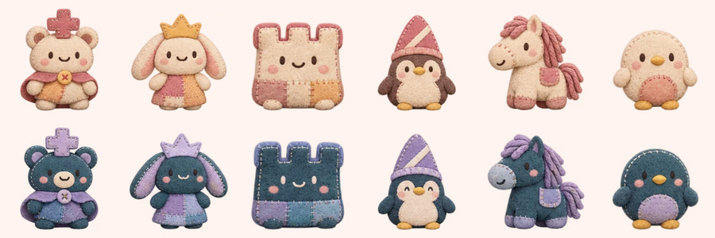
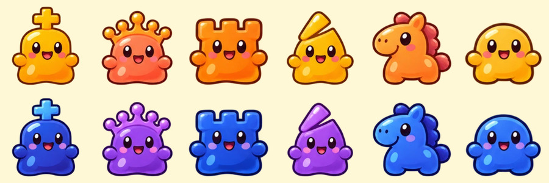
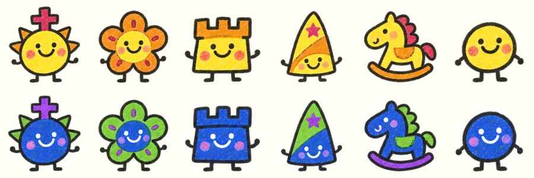
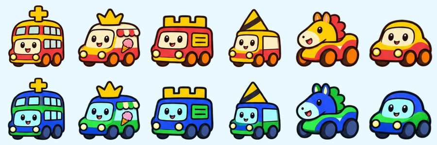
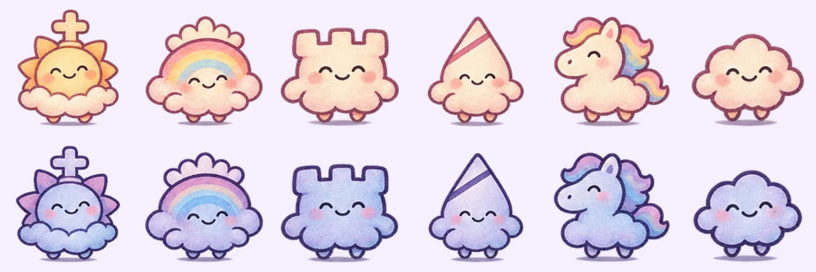

장난감·젤리·크레용·자동차·수채화 동화로 만나는 체스 친구들.백·흑 12종 × 기본·공격·피격 3포즈 · 모두 무료 · 기본 스킨은 로열 클래식
천과 바느질 질감의 포근한 장난감

표정이 살아 있는 탱글탱글 젤리

굵은 낙서 선과 쨍한 크레용 색

알록달록 바퀴 달린 만화 캐릭터

파스텔 수채화 동화 속 날씨 친구

체스 앱 열기 → 꾸미기 → 말 → 스킨 선택 → ♞ 말 모션 보기 · 이전 테마 10종